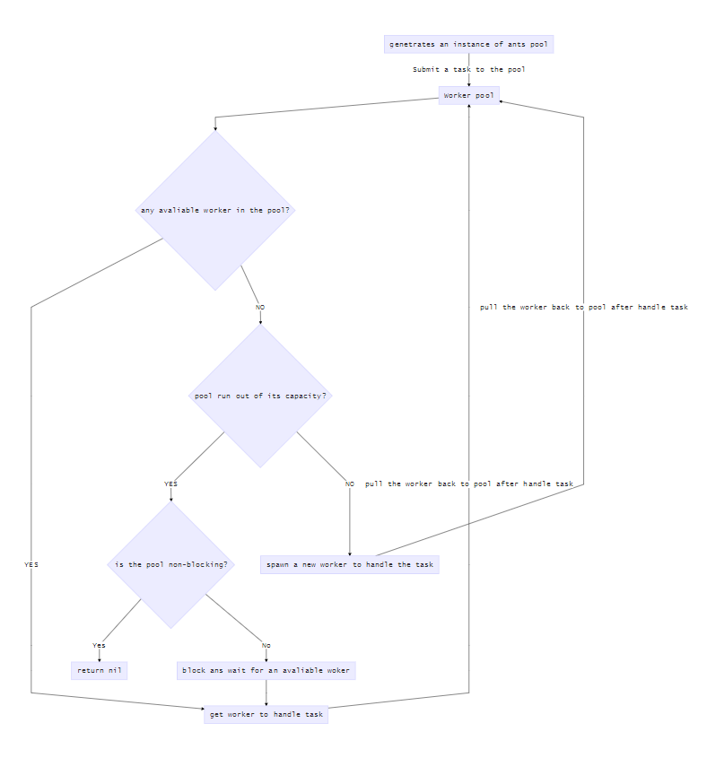

ants源码走读
在goroutine分析中提到goroutine调度管理项目ants，本篇就从源码角度来分析一下协程池的管理实现，其中ants代码基于commitIDb26661997。
结构分析
ants的代码结构很简单，可以分成三部分。
├─examples
| └─main.go
└─internal
│ └─spinlock.go
├─ants.go
├─ants_brnchmark_test.go
├─ants_test.go
├─options.go
├─pool.go
├─pool_func.go
├─worker.go
├─worker_array.go
├─worker_func.go
├─worker_loop_queue.go
├─worker_loop_queue_test.go
├─worker_stack.go
└─worker_stack_test.go
最外层放的都是最主要的实现逻辑部分，还包括关键逻辑的单元测试和性能测试文件。examples中给了一个使用样例，internal中实现了一个自旋锁。
type spinLock uint32
func (sl *spinLock) Lock() {
for !atomic.CompareAndSwapUint32((*uint32)(sl), 0, 1) { runtime.Gosched()
}
}
func (sl *spinLock) Unlock() {
atomic.StoreUint32((*uint32)(sl), 0)
}
// NewSpinLock instantiates a spin-lock.
func NewSpinLock() sync.Locker {
return new(spinLock)
}
可以看到spinLock主要实现了两个方法:Lock和Unlock。Lock最主要的是CAS算法atomic.CompareAndSwapUint32。当sl的值不为0的时候，一直执行runtime.Gosched方法，让当前协程一直让出时间片给别的协程，以此达到自旋锁的功能。需要注意的是，该自旋锁不支持重入， 即当一个线程第一次已经获取到了该锁，在锁释放之前又一次重新获取该锁，第二次就不能成功获取到。由于不满足CAS，所以第二次获取会进入while循环等待，而如果是可重入锁，第二次也是应该能够成功获取到的。
若要实现可重入锁，我们可以通过引入计数器，来记录获取锁的线程数。
type spinLock struct {
owner int
count int
value uint32
}
func (sl *spinLock) Lock() {
me := GetGoroutineId()
if sl.owner == me { // 如果当前线程已经获取到了锁，线程数增加一，然后返回
sl.count++
return
}
// 如果没获取到锁，则通过CAS自旋
for !atomic.CompareAndSwapUint32(&sl.value, 0, 1) {
runtime.Gosched()
}
}
func (sl *spinLock) Unlock() {
if sl.owner != GetGoroutineId() {
panic("illegalMonitorStateError")
}
if sl.count >0 { // 如果大于0，表示当前线程多次获取了该锁，释放锁通过count减一来模拟
sl.count--
} else { // 如果count==0，可以将锁释放，这样就能保证获取锁的次数与释放锁的次数是一致的了。
atomic.StoreUint32(&sl.value, 0)
}
}
func GetGoroutineId() int {
defer func() {
if err := recover(); err != nil {
fmt.Printf("panic recover:panic info:%v\n", err)
}
}()
var buf [64]byte
n := runtime.Stack(buf[:], false)
idField := strings.Fields(strings.TrimPrefix(string(buf[:n]), "goroutine "))[0]
id, err := strconv.Atoi(idField)
if err != nil {
panic(fmt.Sprintf("cannot get goroutine id: %v", err))
}
return id
}
func NewSpinLock() sync.Locker {
return &spinLock{owner: GetGoroutineId(), value: uint32(0), count: 0}
}
源码分析
我们通过项目中给的example，来了解ants的调用逻辑。
var sum int32
func myFunc(i interface{}) {
n := i.(int32)
atomic.AddInt32(&sum, n)
fmt.Printf("run with %d\n", n)
}
func demoFunc() {
time.Sleep(10 * time.Millisecond)
fmt.Println("Hello World!")
}
func main() {
defer ants.Release()
runTimes := 1000
// Use the common pool.
var wg sync.WaitGroup
syncCalculateSum := func() {
demoFunc()
wg.Done()
}
for i := 0; i < runTimes; i++ {
wg.Add(1)
_ = ants.Submit(syncCalculateSum)
}
wg.Wait()
fmt.Printf("running goroutines: %d\n", ants.Running())
fmt.Printf("finish all tasks.\n")
// Use the pool with a method,
// set 10 to the capacity of goroutine pool and 1 second for expired duration.
p, _ := ants.NewPoolWithFunc(10, func(i interface{}) {
myFunc(i)
wg.Done()
})
defer p.Release()
// Submit tasks one by one.
for i := 0; i < runTimes; i++ {
wg.Add(1)
_ = p.Invoke(int32(i))
}
wg.Wait()
fmt.Printf("running goroutines: %d\n", p.Running())
fmt.Printf("finish all tasks, result is %d\n", sum)
if sum != 499500 {
panic("the final result is wrong!!!")
}
}
从主函数中可以看到，其实这里作者给了两种通过协程池调度goroutine的方法，分别是通过ants.Submit调用的defaultAntsPool和通过NewPoolWithFunc起的协程池实例，并通过对应的Invoke方法传入参数启动协程执行对应逻辑。对比两种方法的实现，我们可以看到后者可以通过传参控制协程池中最大的协程数量；而前者默认协程池中最大的协程数量为MaxInt32对协程池中的协程数量。同时，后者可以传入每个协程方法对应的入参和协程超时、控制任务block以及对协程函数执行错误的处理等。很明显可以看出，后者对于复杂的场景有更好的处理办法。在ants项目的Readme中也提到，可以通过ants.NewPool方法定义协程池的协程数量，具体的用法和example中的方法一类似，暂且略过不表。对于同一个协程池中每个独立的协程处理不同的方法这样的场景，也可以通过NewPoolWithFunc起协程池实例，然后通过Invoke方法将对应的处理方法作为入参传入即可。虽然有些不方便，但是这也是一种办法。
整个协程池控制流程可以表示如下：

可以看出，整个处理流程还是很明确的。
继续看实现细节，可以看到对于两种实例化协程池的方法，实现的协程池对象结构不同。如果采用NewPool来实例化协程池，那么生成的协程池结构如下：
type Pool struct {
// capacity of the pool, a negative value means that the capacity of pool is limitless, an infinite pool is used to
// avoid potential issue of endless blocking caused by nested usage of a pool: submitting a task to pool
// which submits a new task to the same pool.
capacity int32
// running is the number of the currently running goroutines.
running int32
// workers is a slice that store the available workers.
workers workerArray
// state is used to notice the pool to closed itself.
state int32
// lock for synchronous operation.
lock sync.Locker
// cond for waiting to get a idle worker.
cond *sync.Cond
// workerCache speeds up the obtainment of the an usable worker in // function:retrieveWorker.
workerCache sync.Pool
// blockingNum is the number of the goroutines already been blocked on pool.Submit, protected by pool.lock
blockingNum int
options *Options
}
其中结构体变量woker是一个自定义的interface，并且定义了六个“抽象”函数len,isEmpty,insert,detach,retrieveExpiry和reset，从函数名就可以看出每个函数的作用。当前有两个结构体“实现了”这个interface，分别是loopQueue和workerStack。这两个结构体的区别就是loopQueue可以在初始化pool实例的时候预分配内存。所以如果通过NewPool初始化pool实例并且在option中定义了PreAlloc值的话，就会使用loopQueue来实现worker队列。
而如果采用NewPoolWithFunc实例化协程池对象的话，生成的是如下的协程池对象：
type PoolWithFunc struct {
// capacity of the pool.
capacity int32
// running is the number of the currently running goroutines.
running int32
// workers is a slice that store the available workers.
workers []*goWorkerWithFunc
// state is used to notice the pool to closed itself.
state int32
// lock for synchronous operation.
lock sync.Locker
// cond for waiting to get a idle worker.
cond *sync.Cond
// poolFunc is the function for processing tasks.
poolFunc func(interface{})
// workerCache speeds up the obtainment of the an usable worker in function:retrieveWorker.
workerCache sync.Pool
// blockingNum is the number of the goroutines already been blocked on pool.Submit, protected by pool.lock
blockingNum int
options *Options
}
可以看到两个结构体除了wokers实现不一样、后者有poolFunc外，其余都大致相同。
重点需要提的是poolWithFunc和pool都存在lock和cond结构体成员。其中lock采用的是前文中实现的spinLock。在这里，lock配合cond，通过信号实现对协程池中worker数量的控制。关于sync.Cond和sync.Locker配合实现对goroutine的并发控制这里先跳过，后面会有专门的博文分析。不论是pool还是poolWithFunc，都会在woker执行完task后置上信号量用来通知别的已经获得旋转锁的worker执行对应的task。同时，会起一个协程执行periodicallyPurge方法，专门用来清理执行超期的协程。此处的lock和cond也可以通过goroutine分析中提到的sync.WaitGroup和channel实现相同的功能。
为了提高GC机制导致的性能问题，ants引入了sync.Pool来实现创建和销毁worker。当初始化协程池实例时，new一个workerCache对象，用来指定worker对象的结构体。虽然poolWithFunc和pool方法对应的worker不同，但实际上两者除了argschannel中传入的类型不同外，没有很大的差别。此处暂时以poolWithFunc结构体中的goWorkerWithFunc为例，结构体如下：
// pool who owns this worker.
pool *PoolWithFunc
// args is a job should be done.
args chan interface{}
// recycleTime will be update when putting a worker back into queue.
recycleTime time.Time
pool定义的是当前worker所属的pool，recycleTime定义的是worker被回收的时间。goWorkerWithFunc和goWorker唯一的区别在于args的类型，前者通过args传入不同的入参，而后者通过args传入具体的处理方法。需要注意的是，并不是一个worker就对应一个执行task的协程。在定义args通道的缓冲大小方法中，作者借鉴了fasthttp中的做法，通过runtime.GOMAXPROCS来定义channel的缓冲大小。当runtime.GOMAXPROCS>1时，将缓冲大小设置为1，否则设置为0。也就是说，当程序使用的cpu核数超过1时，一个worker将可以同时处理两个goroutine。
对于worker中具体执行task以及task执行完和超时回收的逻辑，前文的流程图中已经有做说明，具体的方法就不再细看。作者还实现了动态调整goroutine池容量的方法，实现的机制就是更改pool对象的cap大小，实现代码不再细究。
最后
ants已经算是比较成熟的goroutine池调度和控制项目。从作者的测试结果来看，当任务量较小（小于1000W）场景下，采用ants控制goroutine和go原生goroutine，差别不大；但当任务量较大（大于1000W）时，才用ants调配goroutine可以将任务处理时间提升1倍。具体的压测参数，可以参见项目的Readme。
ants项目的代码实现层面上，我认为还是存在可以优化和完善的地方，例如pool和poolWithFunc以及goWorker和goWorkerWithFunc中存在大量重复的逻辑，后期还可以再完善。